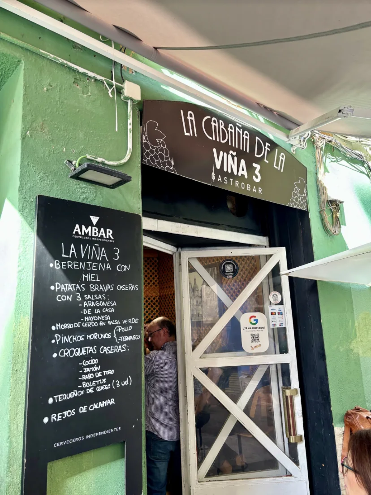
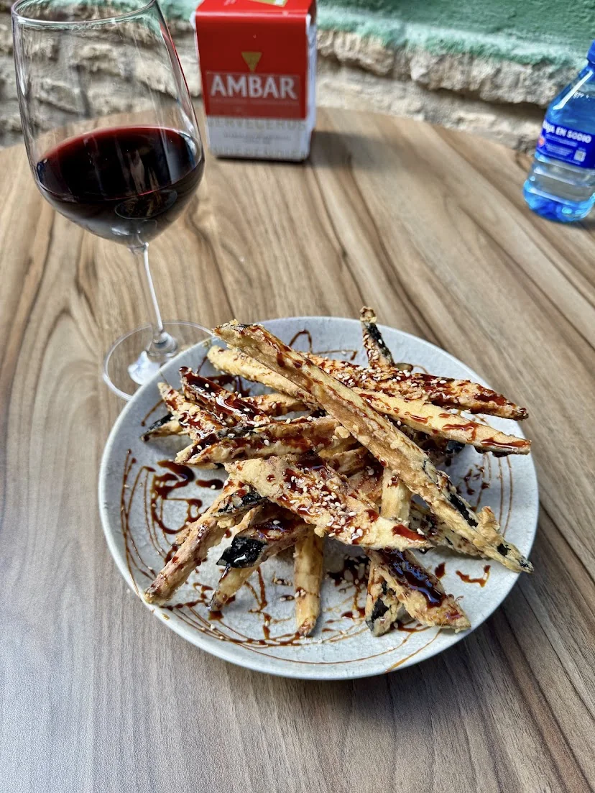
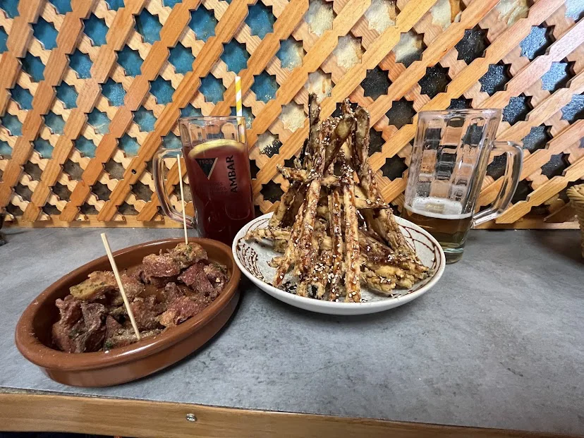
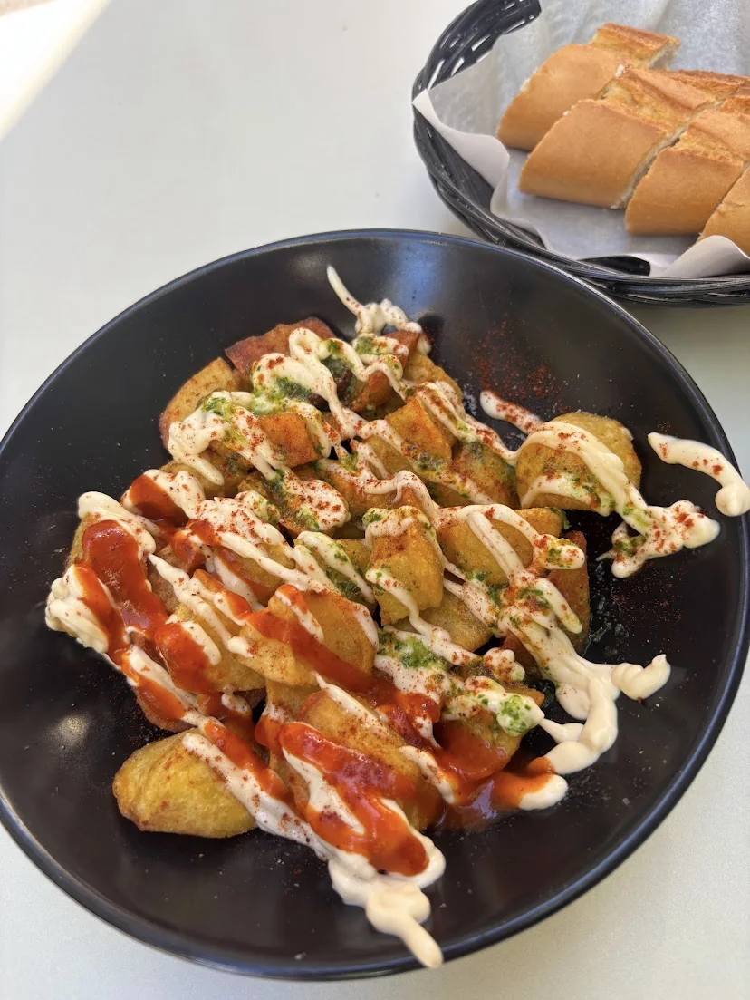
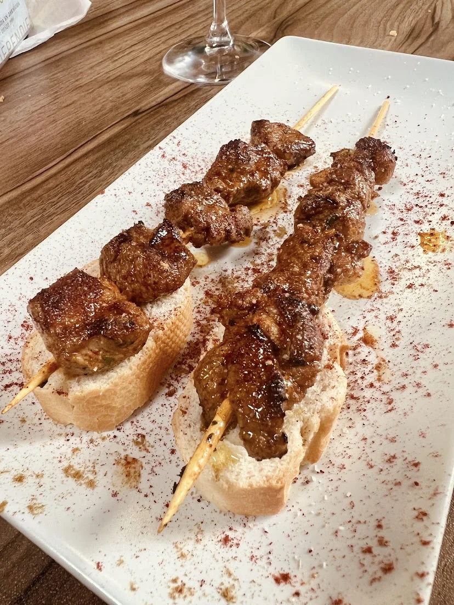

Créditos fotográficos
Gracias a los clientes que compartieron sus fotos de La Cabaña de la Viña 3, y a los autores de las imágenes con licencia Creative Commons.

FachadaFernando C. · Foto de cliente publicada en Google Maps La barraFernando C. · Foto de cliente publicada en Google Maps
La barraFernando C. · Foto de cliente publicada en Google Maps
Berenjena con mielEDC · Foto de cliente publicada en Google Maps
Mesa con celosíaManuel Toribio · Foto de cliente publicada en Google Maps
Patatas bravasAndrea Escuer · Foto de cliente publicada en Google Maps
Pinchos morunosSam · Foto de cliente publicada en Google Maps La Magdalena, ZaragozaMatthew Black · CC BY-SA 2.0 · Original ↗
La Magdalena, ZaragozaMatthew Black · CC BY-SA 2.0 · Original ↗